Flutter is a great framework for creating beautiful apps both for Android, IOS, Web and Desktop apps.
Flutter apps are based on a single codebase developed in Google's Dart programming language.
Flutter Key Features:
- Cross Platform: Developing native apps for IOS, Android Web and Desktop
- Single Codebase: Develop a beautiful cross platform apps based on single codebase
- Open source: Flutter is an open source framework
- Fast Development Cycle: Fast development cycle with HotReload
- No UI bridges: Flutter doesn't use platform OEM widgets such as TextView or RecyclerView, instead, Flutter draws all widgets directly on device canvas.
No bridges are used. Flutter owns every pixel on screen! - Performance: Flutter aims to provide 60 frames per second (fps) performance, or 120 fps performance on devices capable of 120Hz updates. Animations in Flutter are just great.
- Dart: Dart is an object oriented language which utilize modern programming paradigms such as asynchronous Future<>, await, Streams, Listeners and lambda expressions, declarative statement - Use JIT compiler for debug and AOT for release
- Google Support: Flutter developed and supported by Google
- Great Documentation: Flutter has rich and detailed documentation
What you will build:
In this workshop - codelab, you will get hands on coding and create your first Flutter app, learn the basic concepts of Flutter such as Widget, Context and State
Your App Will:
- Contain 2 screes, a login screen and a gallery screen
- Download and show images from the internet
- Support dark mode theme!!
- The app will run on Android, IOS and Web!
Final App:
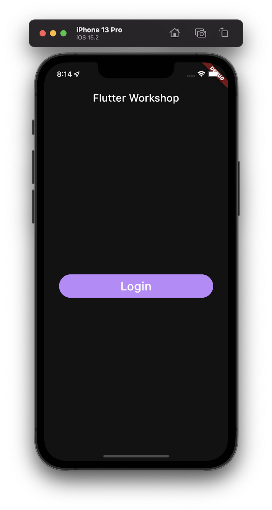 | 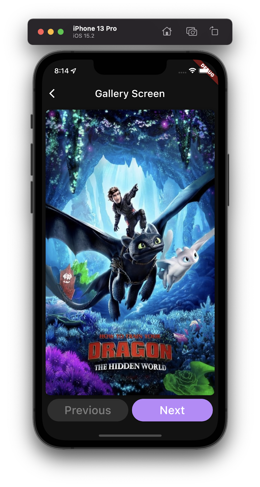 |
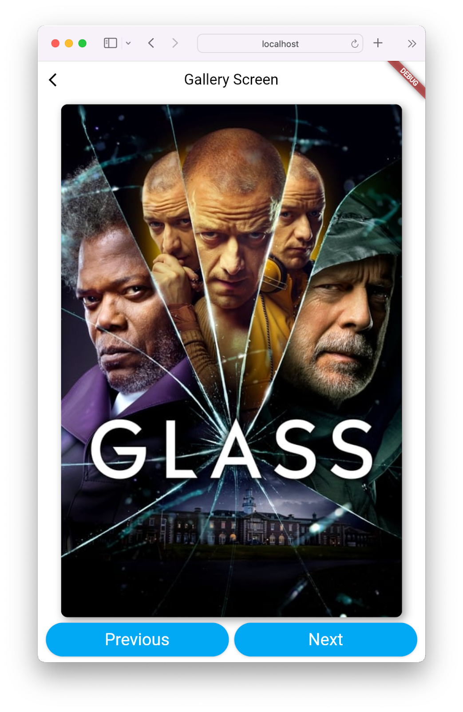
What you will learn
- Flutter building blocks - Stateless and Stateful Widgets
- Flutter Context and State
- Design UI and create your own custom widgets
- Use Flutter hot reload
- Handle click events and use Flutter Navigator
- Flutter app theming and Dark Mode!!
- Simple State management with setState,
- Advanced State Management with MobX and Provider!
- Learn the Dart programming language
- Flutter IDE tips and tricks
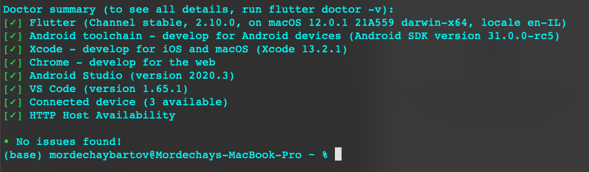
- This tutorial is built on exercises
- Each exercise has a branch in the repository.
- Each branch is followed by a solution branch like: ex_1 and sol_1.
- The master branch has the complete app.
- On each branch, there is a TODO comments file which instructs you what you should do.
- In Android Studio, you can see all the TODO's in the TODO's tab on the bottom left side of the screen:
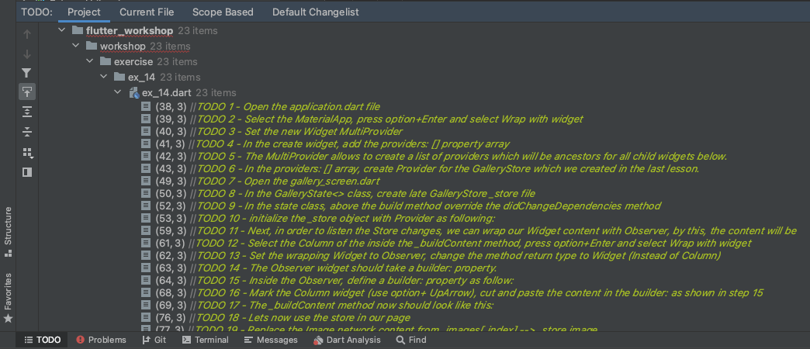 - Follow the TODO's comments or the instructions on this document to complete the exercise.
What you will do here:
- Create new Flutter project
- Create and run Android emulator
- Run Flutter app from IDE
- Run flutter app from command line
- Explore Flutter project structure
- Use Hot Reload
Create New Flutter Project
- Open a Terminal and browse to a directory which you want to create the project (e.g. /AndroidStudioProjects/Flutter/FlutterWorkshop)
- Run flutter create command:
flutter create flutter_workshop - Follow the instructions as the project is created in the terminal
- Once the project has been created, open the project in Android Studio
Open the project in Android Studio
- Open AndroidStudio
- Click on File → Open
- Browse to the project directory: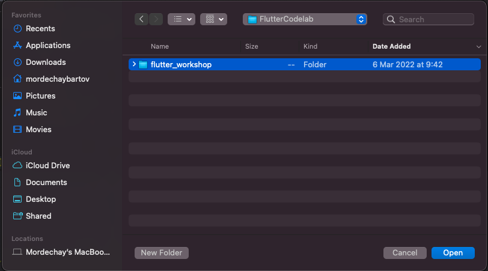
- Select the directory and click Open
Explore Flutter Project Structure
Create Android Emulator
- Click on the AVD manager icon:

- Click on +Create Virtual Device button

- Select the default emulator and click Next
- Select a System Image, download it if required (Recommended for this tutorial, 30 - R and above)
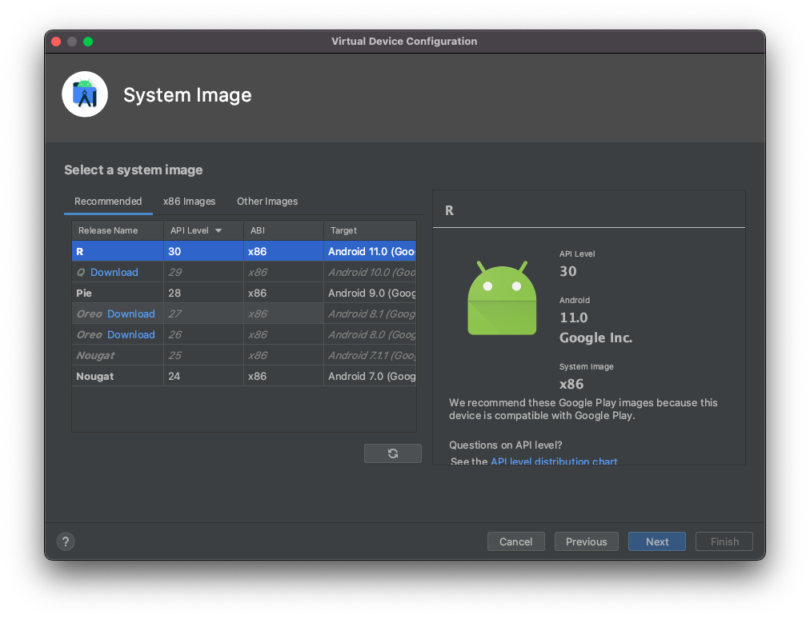
- Continue to configuration, set the emulator name,
- Click Finish.

- Click the run button to start the emulator

- Once the emulator is running, run
flutter doctorcommand, notice for connected device
Run the Flutter default app
If you look now inside the lib folder you will see the default Flutter sample application.
Run the app from IDE
- Run the app from the Run icon

- This is the Flutter default demonstration app (the counter app)
- Check out the counter button operation
- In the project file, under the MaterialApp modify the theme color from blue to green
- Press Ctrl+S to save, this will do Hot Reload, notice the color change on the screen.
|
|


Run the app from terminal
- Stop the app from the Stop button
- Open IDE terminal
- Run
flutter run -d allcommand - Wait for the app to run
- Change the
_counter++to decrement_counter--(on line 59) - In the terminal, press r to do hot reload, press the + button, the counter should now decrease
What you will do here:
- Create the tutorial project root Application entry point
- Learn about the MaterialApp Widget
- Create the
main()function which is the entry point of the app - Run Flutter app from the command line
Create the Application file
- Delete the entire content code in
main.dartwhich given by the flutter sample project - Under the
libfolder, create newapplication.dartfile - Open the
application.dartfile, import the package:flutter/material.dart package - Create
MyAppclass which extends StatelessWidget - Override the build()method and return a MaterialApp Widget
- In the MaterialApp constructor, add title: "Flutter Workshop"
- For now, set the
home:argument to be Container()
//application.dart
import 'package:flutter/material.dart';
class MyApp extends StatelessWidget{
@override
Widget build(BuildContext context) {
return MaterialApp(
title: "Flutter workshop",
home: Container(),
);
}
}
- Open the empty main.dart file
- Import
'package:flutter/material.dart'package - Add void main() function and call runApp() method to run the MyApp just created
//main.dart
import 'package:flutter/material.dart';
import 'package:flutter_workshop/application.dart';
void main() => runApp(MyApp());
- Open a terminal, run:
flutter run -d allto run the app (You should get black screen now)
Summary
What you will do here
- Create the app HomeScreen dart file
- Use Flutter Hot Reload
- Learn about the Stateless Widget
- Set app home screen
Create The HomeScreen
- Under the lib directory, create new package with the name 'screens' (right click, New --> Directory/Package)
- Under the new screens directory, create home_screen package
- Inside the home_screen package, create new
home_screen.dartfile - Open home_screen.dart, create HomeScreen class which extends StatelessWidget
- Override the
build()methodReturn aContainer()Widget
//home_screen.dart
import 'package:flutter/material.dart';
class HomeScreen extends StatelessWidget {
@override
Widget build(BuildContext context) {
return Container();
}
}- Go back to
application.dartfile and replace the home: argument to HomeScreen() - Import HomeScreen as necessary
- Run app again (Still black screen)
//application.dart
import 'package:flutter_workshop/screens/home_screen/home_screen.dart';
return MaterialApp(
title: "Flutter workshop",
home: HomeScreen(),
)What you will do here
- Learn about Flutter page structure, Scaffold, AppBar, and Body
- Work with Text and Center widgets
Build HomeScreen body
- Open the home_screen.dart file
- In the build method, replace the Container() widget with a Scaffold() widget
- Add an appBar: argument to the Scaffold widget -> abbBar: AppBar()
- Go to the terminal where the app runs, hit 'r' for hot reload, you should now see a white screen with a blue toolbar.
- Add a title to the toolbar, expand the AppBar constructor, add a title: argument with a Text("Flutter Workshop") widget., do hot reload again ('r')
//home_screen.dart
Scaffold(
appBar: AppBar(
title: Text("Flutter Workshop"),
),);- You should now see the title on the toolbar
- In the Scaffold right after the appBar field, add a body: argument
- Set the body: argument to Center() widget
- Set the Center() child: widget with a Text()
- Set the text to be "Hello Flutter"
//home_screen.dart
Scaffold(
appBar: AppBar(
title: Text("Flutter Workshop"),
),
body: Center(
child: Text("Hello Flutter"),
),
);What you will do here
|
Add ElevatedButton
- Go over the Text widget and click Option+Enter
- From the drop down menu, select ‘Wrap with widget' option
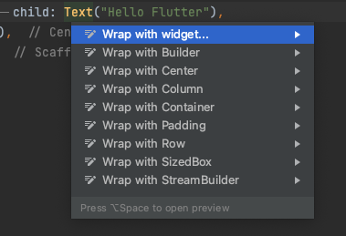 - Rename the new widget to ElevatedButton, add a ‘ , ' after the Text widget inside the ElevatedButton
- Notice that ElevatedButton requires onPressed callback, for now set in to be null
- Reformat the code by pressing Ctrl+Cmd+L, notice the difference with or without the last comma ‘ , '
- Do hot reload, notice the new disabled button, the button disabled because the onPressed property is null
- Let's set the button be stretched to the screen width
- Wrap the button with a
Column, click on the ElevatedButton, select wrap with Column - Do hot reload, the button jumped to the left of the screen
- In the Column constructor above the children[] property, add the following:
mainAxisAlignment: MainAxisAlignment.center,mainAxisSize: MainAxisSize.max,crossAxisAlignment: CrossAxisAlignment.stretch
- Do hot reload, the button is now stretched all screen width
Add Padding to Button
- Select the ElevatedButton
- Repeat above step 8 and wrap it with Padding
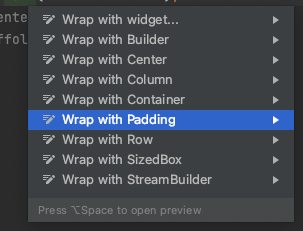 - Set the padding to be:
padding: const EdgeInsets.symmetric(horizontal: 20.0) - Do hot reload
- The button has padding but it still disabled
Enable the button
- Enable to button by adding onPressed: callback
//home_screen.dart
Column(
mainAxisAlignment: MainAxisAlignment.center,
mainAxisSize: MainAxisSize.max,
crossAxisAlignment: CrossAxisAlignment.stretch,
children: [
Padding(
padding: const EdgeInsets.symmetric(horizontal: 20.0),
child: ElevatedButton(
child: Text("Hello Flutter"),
onPressed: (){
print("Button Pressed");
},
),
),
],
)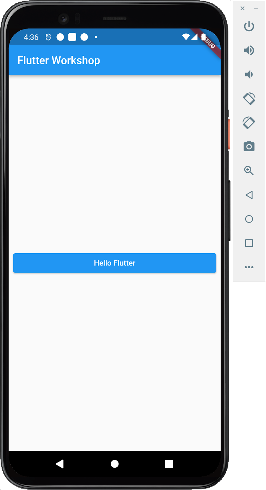
What you will do here:
- Create a new page widget
- Learn about the StatefulWidget and State
- Arrange widgets in a page
- Download images from the internet and show them on screen
- Use the Flutter Navigator Widget to move between pages
Add new package and page Dart file
- Under screens directory/package, create new gallery_screen directory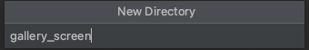
- In the new gallery_screen directory, create new gallery_screen.dart file
- In the new file create
GalleryScreenclass - Make the class extends
StatefulWidget - Override the createState method
- In the gallery_screen.dart, create another class
GalleryScreenState, extendsState - In new class, override the build method
- In the State class, replace the
Container()with aScaffold()widget. - Add an AppBar with a title: "Gallery Screen" (checkout Ex_3 for reminder)
- Add a body, with a
Container()widget - Expand the Container constructor, add padding:
//gallery_screen.dart
Scaffold(
appBar: ...
body: Container(
padding: const EdgeInsets.all(8.0),
child: ...
),//Container
) //Scaffold- Next, set the Container child to Column()
- Set the Column attributes to be:
mainAxisSize: MainAxisSize.maxmainAxisAlignment: MainAxisAlignment.centercrossAxisAlignment: CrossAxisAlignment.stretched
- Add children empty array to the Column
//gallery_screen.dart
Scaffold(
appBar: AppBar(
title: Text("Gallery Screen"),
),
body: Container(
padding: EdgeInsets.all(8),
child: Column(
mainAxisSize: MainAxisSize.max,
mainAxisAlignment: MainAxisAlignment.center,
crossAxisAlignment: CrossAxisAlignment.stretch,
children: [
],
),
),
);Navigate to Gallery Screen from Home Screen
- In the home_screen.dart file, go to the Login ElevatedButton
- In the onPressed: (){}, call the Flutter Navigator to open the GalleryScreen
Navigator.of(context).push( MaterialPageRoute(builder: (context) => GalleryScreen()))
//home_screen.dart
import 'package:flutter_workshop/screens/gallery_screen/gallery_screen.dart';
...
ElevatedButton(
child: Text("Login"),
onPressed: (){
Navigator.of(context).push( MaterialPageRoute(builder: (context) => GalleryScreen()));
},
)- Import the GalleryScreen(), use Alt+Enter
- Do hot reload
- Press the login button, the empty white Gallery screen should open
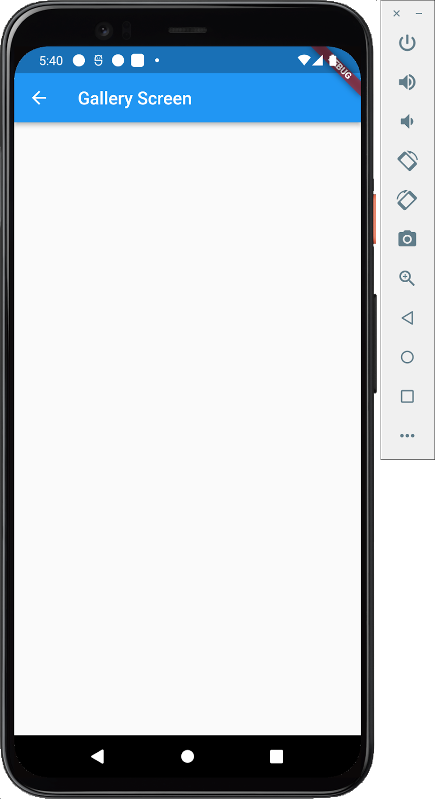
What you do here
- Build the gallery pages UI structure
- Use the Image widget to fetch images from the internet.
- Use Row widget to arrange widget horizontally
- Use the Padding and Expanded widgets to adjust our layout
Display an Image from Internet
- Open the gallery_screen.dart file
- At the top of the _GalleryPageState class declare a String member variable:
//gallery_screen.dart
class _GalleryScreenState extends State<GalleryScreen> {
final String _imageUrl = "https://image.tmdb.org/t/p/w500/xvx4Yhf0DVH8G4LzNISpMfFBDy2.jpg";
...- In the page Column widget, look for the children[] array (As we did in Ex_5)
- In the children array, add Image.network() Widget, with a URL:
Image.network(_imageUrl, fit: BoxFit.fill,) - Do hot reload, you should now see an image on screen
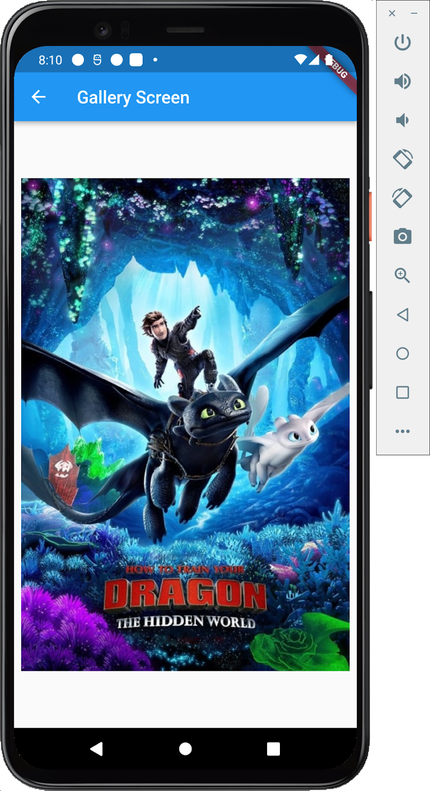
Add gallery buttons
- Under the Image.network|() widget, add Row() widget
- Set the Row attributes and an empty children array
//gallery_screen.dart
children: [
Image.network(_imageUrl, fit: BoxFit.fill,), //Image.network
Row(
mainAxisAlignment: MainAxisAlignment.spaceEvenly,
mainAxisSize: MainAxisSize.max,
crossAxisAlignment: CrossAxisAlignment.center,
children: [ ]
), //Row
]- In the empty array, add two ElevatedButton() objects
- For now, set each button onPressed: to null and child: to Text()
- Set the first button child to: Text("Previous"),
- Set the second button child to Text("Next"),
ElevatedButton(onPressed: null, child: Text("Next"))
ElevatedButton(onPressed: null, child: Text("Previous")) - Do hot reload, watch the page with image, and two disabled buttons.
- Let's make the buttons expand with some padding
- Click on the first ElevatedButton, press Alt+Enter, select Wrap with new Widget
- Set the new Widget name to Expanded
- Repeat 9 - 10 steps for the second button
- Do hot reload, notice the buttons now fully expanded.
Add buttons padding
- Select first ElevatedButton, press Alt+Enter, select Wrap with padding
- Set the padding to: padding: const EdgeInsets.symmetric(horizontal: 4)
- Repeat steps 13 - 14 for the second button.
//gallery_screen.dart
Expanded(
child: Padding(
padding: EdgeInsets.symmetric(horizontal: 4),
child: ElevatedButton(onPressed: null,
child: Text("Previous")),
), //Padding
) //ExpandedWhat you will do here
- Enable the gallery buttons
- Extract logic for buttons creation to a method
Enabling the buttons
The gallery buttons are still disabled, that's because we've set their onPressed callback to be null.
- Inside the first button constructor, add onPressed: argument:
onPressed: (){} - Repeat last 2 steps for the second button
- Do hot reload, the buttons are now enabled and clickable
//gallery_screen.dart
Expanded(
child: Padding(
padding: EdgeInsets.symmetric(horizontal: 4),
child: ElevatedButton(
onPressed: (){
print("Previous button clicked")
}, //onPressed callback enables the button
child: Text("Previous"),
), //Elevated button
), //Padding
) //ExpandedExtract buttons creation to a method
- Select the Padding of the first ElevatedButton, press Option+UpArrow for easy selection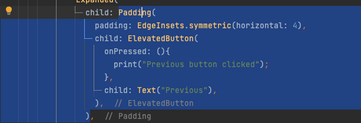
- Press option+command+M, Extract Method dialog will open
- Set the method name to _buildGalleryButton
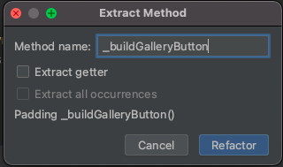 - Modify the method signature as following:
Widget _buildPageButton({required String title, VoidCallback()? onPressed}) - Fix the compilation errors in place where the button calls it as following:
//gallery_screen.dart
Expanded(
child: _buildgalleryButton(title: "Previous",
onPressed: () {
print("Previous button clicked")
},),
) //Expanded,- Replace the second button by calling the _buildGalleryButton
buildPageButton(context: context, title: "Next", onPressed: (){},)
Fix method body
- In _buildGalleryButton method, replace
Text("")withText(title) - Replace the
onPressed: (){}toonPressed: onPressed - Finally method should look like this:
//gallery_screen.dart
Widget _buildPageButton({String title, Function() onPressed}) {
return Padding(padding: const EdgeInsets.symmetric(horizontal: 4),
child: ElevatedButton(
child: Text(title),
onPressed: onPressed,),
);
}
- Finally the buttons Row should look like this:
//gallery_screen.dart
Row(
mainAxisAlignment: MainAxisAlignment.spaceEvenly,
mainAxisSize: MainAxisSize.max,
crossAxisAlignment: CrossAxisAlignment.center,
children: [
Expanded(
child: _buildPageButton(title: "Previous", onPressed: () {}),
),
Expanded(
child: _buildPageButton(title: "Next", onPressed: () {}),
)
],
)What you will do here
- Add Images list
- Switch between images using the navigation buttons
- Understand the idea of State and the use setState method
- Learn IDE shortcuts for selecting and extracting code
Add Images list
- In the _GalleryScreenState class, add a list with 3 images:
//gallery_screen.dart
class _GalleryScreenState extends State<GalleryScreen> {
List<String> _images = [
"https://image.tmdb.org/t/p/w500/xvx4Yhf0DVH8G4LzNISpMfFBDy2.jpg",
"https://image.tmdb.org/t/p/w500/svIDTNUoajS8dLEo7EosxvyAsgJ.jpg",
"https://image.tmdb.org/t/p/w500/iiZZdoQBEYBv6id8su7ImL0oCbD.jpg"
];
...- Under the _images list, add an integer _index variable
List_images [...];
int _index = 0;
@override
Widget build(BuildContext context){... - Add two methods for increment and decrement the _index
//gallery_screen.dart
class _GalleryScreenState extends State<GalleryScreen> {
List<String> _images = [
"https://image.tmdb.org/t/p/w500/xvx4Yhf0DVH8G4LzNISpMfFBDy2.jpg",
"https://image.tmdb.org/t/p/w500/svIDTNUoajS8dLEo7EosxvyAsgJ.jpg",
"https://image.tmdb.org/t/p/w500/iiZZdoQBEYBv6id8su7ImL0oCbD.jpg"
];
int _index = 0;
void _handleNext() {
setState(() {
Index++;
});
}
void _handlePrevious() {
setState(() {
_index--;
});
}
}
@override
Widget build(BuildContext context){...- Notice that these methods calls the
setState()method, this is a Flutter framework method which cause the widget to rebuild with a new state - In the Image.network widget, replace the hardcoded image url with _images[_index]
Image.network(_images[_index], fit: BoxFit.fill,), - This will load an image from the list according to the index
- In the 'Next' button, use a ternary statement to set the onPressed callback to null like this:
//gallery_screen.dart
_buildPageButton(
title: "Next",
onPressed: _index < (_images.length - 1) ? () {
_handleNext();
} : null,
)- Do the same for 'Previous' button, set the onPressed callback to null like this:
//gallery_screen.dart
_buildPageButton(
title: "Previous",
onPressed: _index > 0 ? () {
handlePrevious();
} : null,
)Dart short syntax
- In Dart, we can have a short syntax, when a callback needs to call a single method with the same signature.
In this case, we can eliminate both the callback () {} and call the method name without () in short syntax as following:onPressed: _index > 0 ? _handlePrevious; : null - Do hot reload, click the buttons and the images should now loaded from the list
- When reaching the last image, the Next button should be disabled
- When reaching the first image, the Previous button should be disabled
Extract page body build to a method
The body creation has some boilerplate code, lets extract this part to a method, as we did with the gallery buttons.
- Click the Column Widget
- Press Alt + Up/Down arrows to select the content of the children array
- Notice that the framework helps you to select blocks separated by commas.
- When the Column structure is marked, press Options+Cmd+M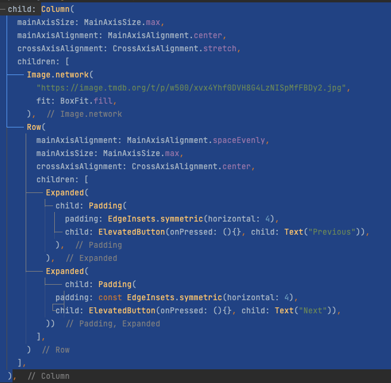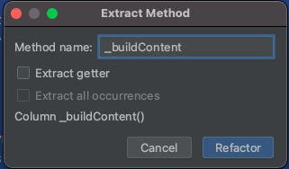
- In the Extract Method dialog, set the method name to _buildContent
- Check out for the new created method, which is now called where the Column was.
- Do Hot Reload, checkout that the the gallery works properly
//gallery_screen.dart
class _GalleryScreenState extends State<GalleryScreen> {
List<String> _images = [...]
...
@override
Widget build(BuildContext context) {
return Scaffold(
appBar: AppBar(
title: Text("Gallery Screen"),
),
body: Container(
padding: EdgeInsets.all(8),
child: _buildContent(),
),
);
}
Widget _buildContent() {
return Column(
mainAxisSize: MainAxisSize.max,
mainAxisAlignment: MainAxisAlignment.center,
crossAxisAlignment: CrossAxisAlignment.stretch,
children: [
Image.network(
_images[_index],
fit: BoxFit.fill,
),
Row(
mainAxisAlignment: MainAxisAlignment.spaceEvenly,
mainAxisSize: MainAxisSize.max,
crossAxisAlignment: CrossAxisAlignment.center,
children: [
Expanded(
child: _buildGalleryButton(title: "Previous", onPressed: _index > 0 ? _handlePrevious : null)),
Expanded(
child: _buildGalleryButton(title: "Next", onPressed: _index < (_images.length - 1) ?_handleNext : null ))
],
)
],
);
}
Widget _buildGalleryButton({required String title, VoidCallback? onPressed}) {
return Padding(
padding: EdgeInsets.symmetric(horizontal: 4),
child: ElevatedButton(onPressed:onPressed, child: Text(title)),
);
}
}When building UI in Flutter, it is highly recommended to divide our UI elements into structures and custom components which can be reused and easily maintained. This helps us to make our app modular and easy to expand.
For example, in this app, we have 3 buttons, the Login button, and 2 buttons in the gallery screen. We will create a custom button widget with a progress indicator which shares design and functionality. Then use it on all screens.
What you do here
- Create a custom decorated ElevatedButton with rounded corners
- Create a class named arguments constructor
- Add CircularProgressIndicator to the button for loading state
- Replace buttons in app with new custom elevated button
Create Custom Elevated Button widget
- Under the lib directory, create new ui folder/package
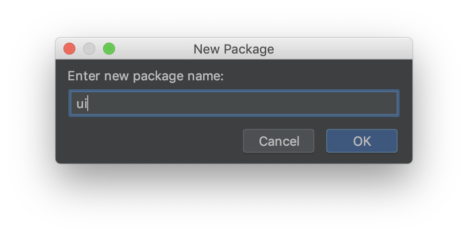 - In the new directory, create custom_elevated_button.dart file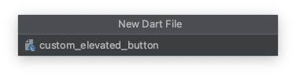
- In the new file, create CustomElevatedButton class which extends StatelessWidget
- Override the
buildmethod and returnContainer() - Go to the home_screen.dart, copy all ElevatedButton login button code
- Use the option+upArrow to select all the code
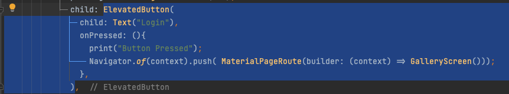 - Paste the code as the child of the Container in the new CustomElevatedButton Widget
- At the top, inside the CustomElevatedButton class, declare to class members:
final VoidCallback? onPressed;
final String title;
final double height;
final bool loading; - These members will be used to configure the new widget
- Create named constructor with these members, make the child required
//custom_elevated_button.dart
Class CustomElevatedButton extends StatelessWidget{
final VoidCallback? onPressed;
final String title;
final double height;
final bool loading;
const CustomRaisedButton({Key? key,
this.onPressed,
required this.title,
this.height = 50.0,
this.loading = false,
},) : super(key: key); //Named constructor
...
@override
Widget build(BuildContext context){- Notice in the constructor we can set default values, and use the
requiredkeyword to prevent nullables values - Set the Container height
- Replace the onPressed and the Text content :
//custom_elevated_button.dart
Class CustomElevatedButton extends StatelessWidget{
final VoidCallback? onPressed;
...
@override
Widget build(BuildContext context) {
return Container(
height: this.height,
child: ElevatedButton(
child: Text(this.title),
onPressed: this.onPressed,
),
);
}Styling the button
For now, we will style the button locally, later we will use the app theme for that.
- Inside the ElevatedButton constructor, add a style property
- Define the style using the styleForm function as following:
style: ElevatedButton.styleFrom(shape: RoundedRectangleBorder(borderRadius: BorderRadius.circular(10))
//custom_elevated_button.dart
Container(
height: ...,
chid: ElevatedButton(
style: ElevatedButton.styleFrom(...),
Text(this.title),
onPressed:this.onPressed;
), //ElevatedButton
) //ContainerUse CustomElevatedButton in code
- Go to home_screen, replace the ElevatedButton with the new CustomElevatedButton you've just created:
//home_screen.dart
Padding(
padding: ...,
child: CustomElevatedButton(
title: "Login",
onPressed: (){
print("Button Pressed");
Navigator.of(context).push( MaterialPageRoute(builder: (context) => GalleryScreen()));
},
),
)- Repeat step 16 for both buttons in the GalleryScreen, inside the _buildGalleryButton method
//gallery_screen.dart
Widget _buildPageButton({required String title, Function()? onPressed}) {
return Padding(
padding: EdgeInsets.symmetric(horizontal: 4),
child: CustomElevatedButton(onPressed: onPressed, title: title),
);
}- Do Hot reload, check that all buttons looks and work properly
The gallery screen works properly but it has some problems. The buttons top side might touch the bottom of the image, when we navigate to the screen, the buttons jump to the middle of the screen until the first image is loaded.
The image is flat, we want to give it rounded corners and apply some shadow.
What you do here
- Rearrange layout using Expanded widget
- Use ClipRRect widget to make rounded corners
- Apply shadow effect
- Use SafeArea widget
Fix buttons jump problem
- In the gallery screen, click/select Image.network Widget
- Press Options+Enter and select Wrap with Widget option
- Set the widget to Expanded
//gallery_screen.dart
Expanded(
child: Image.network(
_images[_index],
fit: BoxFit.fill,
),
),- Do hot reload, notice that the image now expanded, we still need to add some padding between the image and the buttons.
- Notice that on IOS the layout might overflow on the device bottom side. We shall fix it in the next steps
- Select/click on the Row widget, press Options+Enter
- From the help menu, select Wrap with Padding
- Set the padding value to be EdgeInsets.only(top: 8.0), This will add some padding between the bottom of the image and the buttons row
- Do hot reload, look for the better looking layout
//gallery_screen.dart
Padding(
padding: const EdgeInsets.only(top: 8.0),
child: Row(...
children:[] ,
) //Row
)// PaddingAdd SafeArea
On IOS, you might see that the layout reached to the bottom of the screen, we can fix this by using the SafeArea widget.
- Select/Click on the
body: Containerwidget - Press options+Enter, select Wrap with widget
- Set the widget to be SafeArea
- Set the SafeArea
bottom: true
//gallery_screen.dart
body: SafeArea(
bottom: true,
child: Container(
padding: EdgeInsets.all(8),
child: _buildContent()
), //Container
) //SafeArea- Do hot reload, look for the final layout
Image decoration and shadow
Now that we fixed the layout, it's time to decorate the image, Let's add some shadow and rounded corners
- Select the Image.network widget, wrap it with a widget (As we did in previous steps)
- Set the widget to be ClipRRect()
- Add borderRadius: property to the new ClipRRect
- Set the border radius to 10 points as following
//gallery_screen.dart
ClipRRect(
borderRadius: BorderRadius.all(Radius.circular(10)),
child: Image.network(_images[_index]),
)- Wrap the ClipRRect widget with a Container
- To the new Container, set decoration: BoxDecoration() property
//gallery_screen.dart
Container(
decoration: BoxDecoration(
),
child: ClipRRect(
borderRadius: BorderRadius.all(Radius.circular(10)),
child: Image.network(_images[_index]),
), //ClipRRect
), //Container- Inside the BoxDecoration, border radius:
BoxDecoration(borderRadius: BorderRadius.all(Radius.circular(10)),) - Under the borderRadius: add boxShadow: property
//gallery_screen.dart
Container(
decoration: BoxDecoration(
borderRadius: BorderRadius.all(Radius.circular(10)),
boxShadow: [
BoxShadow(
color: Colors.black38,
offset: Offset(4.0, 4.0),
blurRadius: 10.0,
spreadRadius: 0.4,
), //BoxShadow
],
), //BoxDecoration
), //Container- Do hot reload, look for the changes
In this exercise, we will add progress indicator to the CustomElevatedButton and use it to simulate login progress when click the login button in the HomeScreen
What you do here
- Add property to a widget and use it
- Use Future for simulating long operation
- Refactor a Stateless widget to Stateful widget
Add loading state to CustomElevatedButton
- Open the custom_elevated_button.dart file
- Add a boolean loading property to the class
- Add the new property to the class named constructor, set the default value to be false
//custom_elevated_button.dart
class CustomElevatedButton extends StatelessWidget{
final String title;
final double height;
final double loading; //Add this property
const CustomElevatedButton({
Key? key,
this.onPressed,
required this.title,
this.height = 50,
this.loading = false, //Add loading to named constructor
}) : super(key: key);
}- Set the button child depends the loading property, use the ternary statement
child: loading ? CircularProgressIndicator() : Text(this.title) - We also want to disable the button during loading state, we can do this by setting the onPressed to be null while loading
- Use the ternary statement to set the onPressed to null while loading
onPressed: loading ? null : this.onPressed
//custom_elevated_button.dart
ElevatedButton(
style: ElevatedButton.styleFrom(...),
child: loading ? CircularProgressIndicator() : Text(this.title),
onPressed: loading ? null : this.onPressed,
)Simulate long login operation in HomeScreen
Lets simulate a long operation and show the loading indicator in the home screen.
Before we do this, we need to refactor the HomeScreen from Stateless to Stateful widget. After doing this, we will add the loading state property to the home screen and pass it to the CustomElevatedButton as a parameter.
We will use Future.delayed with setState to simulate logging in.
- Open the HomeScreen widget
- Stand on the HomeScreen class name
- Press Option+Enter, from the dialog select Convert to StateFul Widget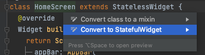
- Notice that the Widget changed to a Stateful widget with a State<> class automatically.
- Inside the new State class, above the
buildmethod, add bool _loading property and set it to false
//home_screen.dart
class _HomeScreenState extends State<HomeScreen> {
bool _loading = false;
@override
Widget build(BuildContext context){.
.}- Under the new property and above the build method create _setLoading method
- Under setLoading method, create another _login() method
- Move the call to navigate GalleryScreen to the end of the _login method
//home_screen.dart
...
bool _loading = false;
void _setLoading(bool loading){
setState(() {
_loading = loading;
});
}
void _login(){
_setLoading(true)
Future.delayed(Duration(seconds: 3), (){
_setLoading(false)
Navigator.of(context).push( MaterialPageRoute(builder: (context) => GalleryScreen()));
});
}
@override
Widget build(BuildContext context){
...- Add the _loading property to the Login button
- In the Login button, call the _login method from the onPressed callback
//home_screen.dart
...
CustomElevatedButton(
loading: _loading,
child: Text("Login"),
onPressed: ()=> _login(), //Call _login function
)
...- Do hot reload, click on the login button and watch the progress indicator and navigation happens after 3 seconds.
Flutter has a built-in Theming framework which allows us to style our app in a modular way!
In addition, it also has support for Dark mode.
In this chapter we will set our app theme base colors both for light and dark mode, as well buttons default shape and corners, text style and size for all across the app.
What you do here
- Learn about theme properties in the MaterialApp
- Use the copyWith pattern to chain and create new Theme objects from an existing one
- Extract theming to methods
Define base light theme with colors
- Open application.dart file, reminder, in this file we created our app root Widget, the MaterialApp
- In the MaterialApp constructor, under the
title: "Flutter Workshop", addtheme:property, the theme property receivesThemeDataobject which contains, theme properties such as colorScheme, textTheme and more - Set the base theme: property as follow
theme: ThemeData.from(colorScheme: ColorScheme.light(primary: Colors.white, onPrimary: Colors.black)) - Do Hot Reload, look how the appBar and Buttons color has changed
- Let's add some more styling by using the
copyWithpattern at the end of theThemeData.from()statement - Set the app bar elevation to 0
ThemeData.from(colorScheme: ...).copyWith(appBarTheme: AppBarTheme(elevation: 0)) - Next, set TextTheme, we want to set all buttons text to size of 25, and appBar text to 22 (appBar text is defined with headline6 theme attribute by default)
ThemeData.from(colorScheme: ...).copyWith(appBarTheme: ... textTheme: TextTheme(button: TextStyle(fontSize: 25), headline6: TextStyle(fontSize: 22),),) - Next, let's set the default theme for ElevatedButtons! This will be done with the
ElevatedButtonTheme
ElevatedButtonThemeData(style: ElevatedButton.styleFrom(
shape: RoundedRectangleBorder(borderRadius:
BorderRadius.all(Radius.circular(40)),),
primary: Colors.lightBlue,
onPrimary: Colors.white,), - Finally, app theme should look like this:
//application.dart
...
theme: ThemeData.from(colorScheme: ColorScheme.light(primary: Colors.white, onPrimary: Colors.black)).copyWith(
appBarTheme: ...
textTheme: TextTheme(button: TextStyle(fontSize: 25), headline6: TextStyle(fontSize: 22)),
elevatedButtonTheme: ElevatedButtonThemeData(
Style: ElevatedButton.styleFrom( shape: RoundedRectangleBorder(borderRadius: BorderRadius.all(Radius.circular(40))),
primary: Colors.lightBlue,
onPrimary: Colors.white,
),
),
)
...- Do hot reload, look on app look with the theme we just applied
Define base dark theme
After setting the default theme, let's set the dark mode theme.
- Above the theme: property add
darkTheme:propertydarkTheme:
theme: ThemeData.from... Repeat steps 5 - 8 for the darkTheme, at the end you should have the following configuration
//application.dart
...
darkTheme: ThemeData.from(colorScheme: ColorScheme.dark(onPrimary: Colors.white)).copyWith(
appBarTheme: AppBarTheme(elevation: 0),
textTheme: TextTheme(button: TextStyle(fontSize: 25), headline6: TextStyle(fontSize: 22)),
elevatedButtonTheme: ElevatedButtonThemeData(
style: ElevatedButton.styleFrom(
shape: RoundedRectangleBorder(
borderRadius: BorderRadius.all(Radius.circular(40)),
),
)),
),
theme: ThemeData.from(...),
...- Do hot reload, switch your device to dark mode, watch how the app looks in dark mode!
Extract theme creation to methods
The theming code adds some boilerplate code to the material app widget. It will be nicer if we can have some util methods for this.
- Click on the light theme content
ThemeData.from(colorScheme: ColorScheme.light... - Press and hold Option while press the up arrow on the keyboard, this will start to mark the ThemeData content, mark the entire content of the ThemeData object
- Press Option+Cmd+M, this will open the extract method dialog
- Set method name to
_buildLightThemeand press Enter - Repeat steps 14 - 17 for darkTheme property, name the method
_buildDarkTheme - At the end your MaterialApp should look as follow:
//application.dart
MaterialApp(
title: "Flutter Workshop",
theme: _buildLightTheme(),
darkTheme: _buildDarkTheme(),
home: HomeScreen(),
);Removing the style: attribute from CustomElevatedButton
In previous chapters we've created a CustomElevatedButton with a progress indicator. We've also defined an internal style attribute for it. Since we defined an elevatedButtonTheme in the app root, we no longer need a local styling in the widget itself. (This actually overrides the theme defined in the app root). Lets remove the local styling from the widget.
- Open the custom_elevated_button.dart file
- Remove the style property
ElevatedButton(
child: loading ? CircularProgressIndicator() : this.child,
onPressed: ... )
- Do Hot reload, checkout the buttons rounded corners
- From the device settings, switch to dark mode and watch how app look changed in dark theme
What you do here
- Add dependencies to flutter app
- Learn about flutter build runner code generation
- Learn to concept of InheritedWidget
- Decouple UI from business logic
Add MobX and Provider dependencies to our project
- Open the project pubspec.yaml file. In this file we can define dependencies, set our project version, define assets and more!
- Add the flutter_mobx library to the project dependencies, in the pubspec.yaml file: https://pub.dev/packages/flutter_mobx
- Add mobx_codegen dependency
- Add Provider package dependency
- Add build_runner to dev_dependencies,
//pubspec.yaml
dependencies:
flutter:
sdk: flutter
flutter_mobx: ^2.0.4
mobx_codegen:
provider: ^6.0.2
# The following ...
cupertino_icons: ^0.1.2 //This one was already there by default
dev_dependencies:
flutter_test:
sdk: flutter
build_runner:- After adding dependencies in the pubspec.yaml, click Pub get to sync the dependencies
Create the Gallery Screen Store
- In the gallery_screen directory, create new gallery_store.dart file
- At the top of the file, import the mobx.dart package:
import 'package:mobx/mobx.dart'; - In the new file, create an
abstract class _GalleryStore, this will be the class which will contain the logic for the gallery
//gallery_store.dart
import 'package:mobx/mobx.dart';
abstract class _GalleryStore with Store {
}- Copy _images list from the gallery screen and place it inside the GalleryStore class
//gallery_store.dart
import 'package:mobx/mobx.dart';
abstract class _GalleryStore with Store {
List<String> _images = [
"https://image.tmdb.org/t/p/w500/xvx4Yhf0DVH8G4LzNISpMfFBDy2.jpg",
"https://image.tmdb.org/t/p/w500/svIDTNUoajS8dLEo7EosxvyAsgJ.jpg",
"https://image.tmdb.org/t/p/w500/iiZZdoQBEYBv6id8su7ImL0oCbD.jpg"
];
}- Below the _images list create the _index @observable
@observable
int _index = 0; - Next, create the _image @computed field:
@computed
String get image => _images[_index]; - Next, create the
firstandlast@computed fields:@computed
bool get first => _index == 0;
@computed
bool get last => _index == (_images.length - 1); - Now, let's create @action methods for next and previous, these methods will be called from the Widget when user clicks the gallery buttons
//gallery_store.dart
import 'package:mobx/mobx.dart';
abstract class _GalleryStore with Store{
List<String> _images = [
"https://image.tmdb.org/t/p/w500/xvx4Yhf0DVH8G4LzNISpMfFBDy2.jpg",
"https://image.tmdb.org/t/p/w500/svIDTNUoajS8dLEo7EosxvyAsgJ.jpg",
"https://image.tmdb.org/t/p/w500/iiZZdoQBEYBv6id8su7ImL0oCbD.jpg"
];
@observable
int _index = 0;
@computed
String get image => _images[_index];
@computed
bool get first => _index == 0;
@computed
bool get last => _index == (_images.length - 1);
@action
void next() => _index++;
@action
void previous() => _index--;
}The store class is ready, however, as you notice, this is an abstract private class, we should create a concrete class for it.
- At the top of the file, above the abstract class define a concrete class for it:
class GalleryStore = _GalleryStore with _$GalleryStore;
abstract class _GalleryStore with Store{... - You should now see some compilation errors, this is fine for now
- At the top of the file, below
importadd thepartimport 'package:mobx/mobx.dart';
part 'gallery_store.g.dart'; - Notice that currently you should have compilation error as the
gallery_store.g.dartfile not exists yet
Running build runner for code generation
- Open the terminal in the project directory
- Run the build runner command:
flutter pub run build_runner build - Wait for the script to complete with Succeeded result: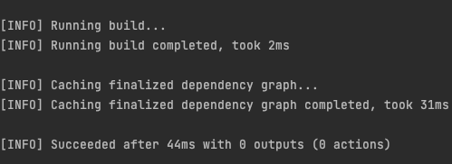
- Go back to the gallery_store.dart file, see that all errors are gone and look for the gallery_store.g.dart file that was created in the same directory.
What you do here
- Create ancestor using Provider
- Access ancestor from a widget using Provider.of(context)
- Use the Observer widget to listen Store changes
Make MobX Store as AppAncestor
- Open the application.dart file
- Select the MaterialApp, press option+Enter and select Wrap with widget
- Set the new Widget
MultiProvider - In the create widget, add the
providers: []property array - The MultiProvider allows creating a list of providers which will be ancestors for all child widgets below.
- In the providers: [] array, create a Provider for the GalleryStore which we created in the last lesson.
//application.dart
import 'package:mobx/mobx.dart';
providers: [
Provider<GalleryStore>(create: (_) => GalleryStore()) //Here we've created an instance of the GalleryStore and set it as an ancestor of the entire app widget tree
]Use Provider to access GalleryStore
- Open the
gallery_screen.dart - In the
GalleryState<>class, create late GalleryStore _store class memberlate GalleryStore _store; - In the state class, above the
buildmethod override the didChangeDependencies method - Initialize the _store object with Provider as following:
//gallery_screen.dart
import 'package:mobx/mobx.dart';
@override
void didChangeDependencies() {
super.didChangeDependencies();
_store = Provider.of<GalleryStore>(context);
}Use Observer widget to listen to changes in the Store
- Select the Column of the inside the _buildContent method, press option+Enter and select Wrap with widget
- Set the wrapping Widget to
Observer, change the method return type to Widget (Instead of Column) - The Observer widget should take a builder: property.
- Inside the Observer, define a builder: property as follow:
//gallery_screen.dart
import 'package:mobx/mobx.dart';
...
Observer(
builder: (context) => Column
)- Mark the Column widget (use option + UpArrow), cut and paste the content in the builder: as shown shown in step 15
- The _buildContent method now should look like this:
//gallery_screen.dart
import 'package:mobx/mobx.dart';
...
Widget _buildContent() {
return Observer(
builder: (_) => Column(
mainAxisSize: MainAxisSize.max,
...Use GalleryStore in GalleryScreen
- Mark the Column widget (use option + UpArrow), cut and paste the content in the builder: as shown shown in step 15
- Replace the Image.network content from
_images[_index]with_store.image
Image.network(store.image, fit: BoxFit.fill) - Replace the the buttons onPressed to invoke
_store.nextand_store.previous
//gallery_screen.dart
import 'package:mobx/mobx.dart';
_buildPageButton(title: "Previous", onPressed: _store.first ? null : store.previous,)
_buildPageButton(title: "Next", onPressed: _store.last ? null : _store.next,)Clean Gallery Unused Code
- Delete the images list,
- Delete the _index variable
- Delete the _handleNext and _handlePrevious methods